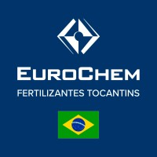

Resido na cidade de Catalão/GO, sou graduado em Engenharia Mecânica, com capacitação em projetos de sistemas de climatização cito sistemas HVAC (Heating, Ventilation and Air Conditioning) refrigeração e ar condicionado, redes Frigoríferas, torres de resfriamento, bombas centrífugas, caldeiras e vasos de pressão. Inspetor de Tubulações Industriais pela AEIERGS (Associação dos Engenheiros Inspetores de Caldeira, Vasos sob Pressão, Estado do Rio Grande do Sul). Pós-graduado em Gerenciamento de Projetos e finalizando a pós em Engenharia e Gestão de manutenção.
Sou um profissional dedicado, disciplinado e proativo e tenho muita facilidade para lidar com pessoas, resolver conflitos e me comunicar de forma clara e respeitosa, tanto em português quanto em inglês. Todas as atividades de engenharia que eu realizo nas empresas no qual trabalhei são baseadas em Normas Nacionais e Internacionais (ASHRAE, ASME, ANSI, API, ISO, ABNT, NRS e PETROBRAS) e nos fundamentos e melhores práticas do Gerenciamento de Projetos (PMBOK-PMI).
MEU DIFERENCIAL
Capacidade de liderança com habilidade para motivar e de influenciar os
liderados, agindo de forma ética e positiva, de modo que contribuam voluntariamente e
com entusiasmo para alcançarem os objetivos da equipe e da organização sempre
explorando de cada membro da equipe os seus pontos fortes. Construí uma formação
bastante sólida ao longo da carreira
DESTAQUE NAS EMPRESAS QUE PASSEI
Para a empresa BRF - BRASIL FOODS em Lucas do Rio Verde-MT ajudei na
implantação do projeto BRF15 na instalação da terceira linha de abate de Aves
com capacidade de 12.000 frangos/hora e também no Start Up da fábrica de
salsichas no setor de industrializados da empresa. Obtive êxito e sucesso neste
trabalho com retornos satisfatórios por parte do cliente.
Para empresa CALLEGARO & IRMÃOS LTDA- FRIGORÍFICO ABATE DE
BOVINOS, localizada na cidade de Santo Ângelo RS auxiliei na coordenação
da implantação do PCM (Planejamento e Controle de Manutenção). Onde obtive
êxito com reduções significativas nos custos de manutenção da empresa.
Para a empresa GEZA LTDA. Localizada na cidade de Araguari-MG trabalhei
com a gestão e o desenvolvimento de projetos para outras empresas, com
significativas melhoras na eficiência energética e construtivas para máquinas
térmicas como caldeiras, vasos de pressão e também fornos crematórios onde
auxiliei no desenvolvimento do projeto piloto. Entre outras atividades conforme
demanda a NR13 e normas nacionais e internacionais respectivamente.
Foi muito gratificante ver os frutos e resultados destes trabalhos.
Entregando presente para o funcionário do mês FTO - Eurochen
Eurochen - Fertilizantes Tocantins - Organizando junto com a equipe a limpeza e manutenção dos equipamentos
Geza Ltda - start up da Caldeira realizando testes e ajustes iniciais.
Ministrando aula de instrução no SENAI, bancada organizada e utilização de ferramentas
Devidamente vestido com EPI's, Empresa Eurochen - Fertilizantes Tocantins
Caldeira em construção Empresa GEZA Ltda
Caldeira finalizda Empresa GEZA Ltda
* Ministrante do Minicurso de Soldagem Industrial – Duração de 30 h. SEEMI URI Santo Ângelo RS (Universidade Regional Integrada do Alto Uruguai e das Missões) – Período 18 á 21/05/2010.
* Professor do curso Eletrotécnico no Centro Integrado de Ensino Técnico (CIENTEC) Aulas ministradas: Período: Fevereiro a Junho de 2012 – Lucas do Rio Verde MT. Eletromagnetismo 40 h, Eletricidade Básica 40 h Geradores e Motores 100 h.
* Prestação de Serviços como Instrutor SENAI – Serviço Nacional de Aprendizagem Industrial- Período: Março/2020 ate o presente momento. Catalão GO.
* Curso: TÉCNICO EM MECÂNICA – Componente - Manutenção de Máquinas e Equipamentos Mecânicos - Carga Horária:180h, Turno Noturno, Data Termino28/08/2020.
* Curso: TÉCNICO EM MANUTENÇÃO DE MÁQUINAS INDUSTRIAIS – Componente - Fabricação Mecânica Aplicada á Manutenção - Carga Horária: 190h, Turno Noturno, Data Termino- 28/08/2020.
* Curso: TÉCNICO EM MECÂNICA – Componente - Automação de Processos Industriais - Carga Horária: 120h, Turno Diurno, Data Termino- 28/06/2020.
* Curso: MECÂNICO DE AUTOMÓVEIS LEVES – Componente - MOTOR CICLO OTTO E SEUS SISTEMAS – (Injeção eletrônica e - Rede CAN ) - Carga Horária:24 horas, Data Termino- 30/07/2020.
* Curso: MECÂNICO DE MANUTENÇÃO EM VEÍCULOS PESADOS RODOVIÁRIOS – Componente - Sistema de Suspensão e Direção de Veículos Pesados Rodoviários - Carga Horária: 20 horas, Data de Inicio 18/05/2020 a 01/06/2020.
* Curso: MECÂNICO DE MANUTENÇÃO EM VEÍCULOS PESADOS RODOVIÁRIOS – Componente - Sistema de Freios Pneumáticos - Carga Horária: 30 horas, Data de Inicio 01/06/2020 a 24/06/2020.
Clique duas vezes na logo da empresa para abrir e depois uma para abrir e fechar
Local: Catalão GO Período: 20/10/2020 até 02/02/2021. Cargo: Supervisor de Produção (Contrato Temporário) Atividades realizadas: Responsável por supervisionar a equipe operacional no controle e cumprimento das instruções operacionais das unidades produtivas em seu turno de trabalho, acompanhando as diversas etapas dos processos, verificando a performance e produtividade dos equipamentos e intervindo, junto à manutenção, quando necessário, visando garantir os padrões de segurança, volume de produção e qualidade dos produtos, da unidade produtiva sob minha responsabilidade.
Local: Araguari MG Período: 01/10/2019 até 01/03/2020. Cargo: Supervisor de Projetos e Planejamento. Atividades realizadas: Responsável pela Coordenação de Obras em caldeiras, rede de vapor e também de equipamentos para frigoríficos, assim como na gestão da equipe de projetos adequando segundo metodologias PMBOK e controles das demandas, auxilio no planejamento e solicitação de materiais para fabricação dos equipamentos da empresa, mais elaboração de cronogramas em MS Project.
Local: Catalão GO Período: 16/03/2019 até o 16/08/2019 Cargo: Encarregado Obras-Planejamento Atividades realizadas: Responsável pela Coordenação de Obras, assim como na mobilização do canteiro, responsável pela gestão dos funcionários, controle, auxilio no planejamento e elaboração de cronogramas. Novos layouts para adequação e desenhos de projetos mecânicos em CAD.
Local: Catalão GO Período: 07/11/2016 até 17/09/2018 Função: Supervisor Operacional – Contrato John Deere Atividades Realizadas: Supervisionar e fiscalizar trabalhos na área de limpeza de forma geral e liderar equipes de trabalho. Supervisiona equipe nas atividades de infraestrutura, envolvendo instalação e manutenção predial. Elabora os procedimentos de trabalho para manutenção corretiva e preventiva. Acompanha o recebimento e a inspeção de materiais para manutenção e a qualidade das instalações. Gestão de serviços terceirizados com realização de rondas controle de abertura e fechamento de chamados. Elaboração de relatórios gerenciais, controle e lançamento de NF. Acompanhamento e gestão de estoque. Gerenciamento dos recursos humanos. Garantia da comunicação ágil e eficaz com o cliente, mantendo interface entre usuários. Participação do desenvolvimento de ações de melhoria das operações.
Local: Santo Ângelo RS Período: 16/03/2014 até 31/12/2015. Cargo: Engenheiro Mecânico Atividades realizadas: Acompanhamento da estrutura da organização de manutenção; Auxiliando na coordenação da implantação do PCM (Planejamento e Controle de Manutenção) na empresa. Responsável Técnico por laudos e Anotações de Responsabilidade Técnica ARTs de máquinas e equipamentos conforme as NRs (12, 13 17, 35, 36 entre outras) e demais normas técnicas, projetos de adequações utilizando ferramentas em CAD e 2D e 3D, conforme exigências do Ministério do Trabalho.
Local: Américo Brasiliense - SP Período: 01/02/2013 a 05/03/2014. Cargo: Engenheiro Mecânico - Coordenador de Obras de Rede de Utilidades. Atividades realizadas: Responsável pela Coordenação de Obras da Rede de Utilidades (Tubulações redes de vapor, condensado, água potável, gelada e industrial, ar comprimido) em indústria de Lácteos (gestão das etapas de montagem/movimentações e das plantas da rede de suportes de tubulações, pipe racks, e seus componentes). Assim como NA mobilização do canteiro, responsável pela gestão dos funcionários, controle e elaboração do cronograma físico financeiro da obra.
Local: Lucas do Rio Verde - MT Período: 19/09/2011 a 12/10/2012. Cargo: Engenheiro Mecânico Jr. Atividades realizadas: Elaboração e adequações de projetos através de estudos de investimentos, memoriais descritivos, novos layouts em CAD para atender o aumento e melhorias do processo produtivo nas áreas fabris e utilidades para geração de energia. Acompanhamento “in loco” das instalações para as montagens de novos equipamentos, elaboração de orçamentos em contato com fornecedores realizando constante estudo de melhorias no processo produtivo da empresa para possibilitar a redução de custos.
Local: Horizontina - RS Período: 01/09/2004 a 02/02/2009. Cargo: Soldador e Montador I. Atividades realizadas: Montagem/soldagem com aparelhos MIG-MAG e solda ponto de componentes primários do corpo das colheitadeiras John Deere, realizando posterior montagem de equipamentos agrícolas em linha de montagem principal para colheitadeiras.